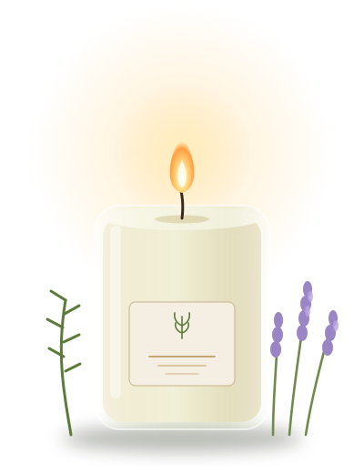

Lavanta & Ardıç
Sakinleştiren, odunsu ve ferah bir akşam kokusu.
Lavanta ve ardıç kokusuyla akşamı yavaşlatan, küçük partilerde dökülen soya mumları. Pamuk fitil, geri dönüştürülebilir cam kavanoz.
Koleksiyonu keşfetHikâyemiz
Sakinleştiren, odunsu ve ferah bir akşam kokusu.
Sabahı aydınlatan hafif, ılık ve çiçeksi bir karışım.
Kışlık, sıcak ve yumuşak; kitap saatlerine uygun.